El Social Engineering Toolkit (SET) es una de las herramientas más populares en el ámbito de la seguridad ofensiva. Desarrollada en Python, está diseñada específicamente para realizar pruebas de ingeniería social, un vector de ataque que explota el factor humano en lugar de vulnerabilidades técnicas puras. En esta actividad, nos enfrentamos a un escenario realista: simular una campaña de phishing dirigida a la infraestructura de nuestra propia universidad (UPSLP), con el objetivo de comprender cómo un atacante podría engañar a un usuario para que revele credenciales o ejecute código malicioso.
La elección de SET no fue casualidad. Esta herramienta integra múltiples vectores de ataque: desde clonación de páginas web hasta ataques de “mass mailer” (envío masivo de correos). En nuestro caso, optamos por un ataque de phishing por correo electrónico, utilizando un servidor Postfix como agente de transferencia de correo (MTA) y configurando un remitente falso (spoofing) para simular un mensaje de soporte técnico de la universidad. El objetivo era medir no solo la capacidad técnica de entrega, sino también la efectividad de los filtros de seguridad perimetral (como Spamhaus y Microsoft Exchange Online Protection) y, sobre todo, reflexionar sobre la vulnerabilidad del eslabón más débil en cualquier organización: las personas.
A lo largo de esta práctica, combinamos conceptos de administración de servidores de correo, listas negras en tiempo real (RBL), y técnicas de evasión básicas. El resultado nos dejó lecciones valiosas sobre la importancia de la reputación de IP, el uso de entornos controlados (sandbox) como MailHog y la necesidad de programas de concientización para los usuarios finales.
Integrantes:
Docente: Mtro. Servando López Contreras
Grupo: T46A
Fecha: March 26, 2026
El presente informe documenta la ejecución de una prueba de concepto (PoC) centrada en el despliegue de una campaña de phishing controlada.
A través de la integración de Social Engineer Toolkit (SET) y un servidor Postfix, se analizó la ruta de entrega de un vector de ataque orientado a la infraestructura de la Universidad Politécnica de San Luis Potosí (UPSLP).
El estudio concluye que, si bien el sistema de ataque fue configurado correctamente, los mecanismos de seguridad perimetral de Microsoft Exchange Online Protection mitigaron el riesgo con éxito.
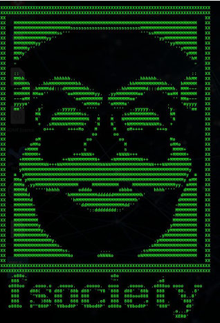
Seleccionamos el ataque que deseamos realizar, en este caso, se trata de la primera opción
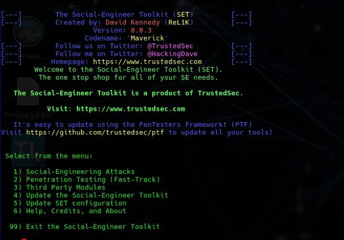
Se seleccionaron dos vectores de ataque:
1) Social Engineering Attacks
5) Mass Mailer Attack
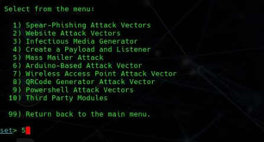
Se estableció el envío de pishing, el objetivo establecido para la prueba fue un correo institucional 179091@upslp.edu.mx, el cual el método de envío es la opción 2, usar nuestro propio servidor.
El remitente falso (soporte@lab.local) sirve como herramienta de spoofing, haciéndonos pasar por administración y soporte de la universidad.
Servidor Relay 127.0.0.1 (localhost); el correo proviene de la propia máquina.
Utilizamos el puerto 25, puerto estándar para SMTP sin cifrar.
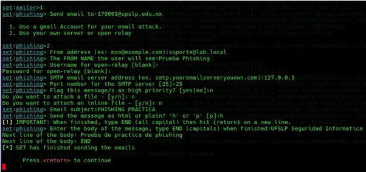
Visualización del servidor Postfix
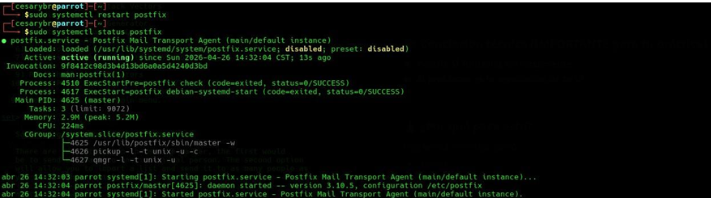
Visualización de los registros obtenidos.:
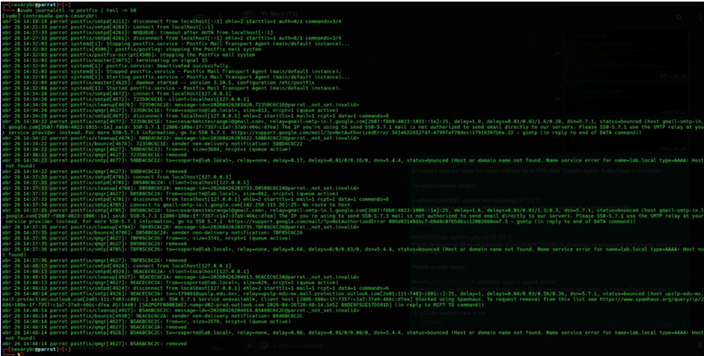
Se mantuvieron las mismas configuraciones en ambas pruebas, con la diferencia de que una se ejecutó utilizando MailHog y la otra se realizó sin su uso, con el fin de comparar los resultados.
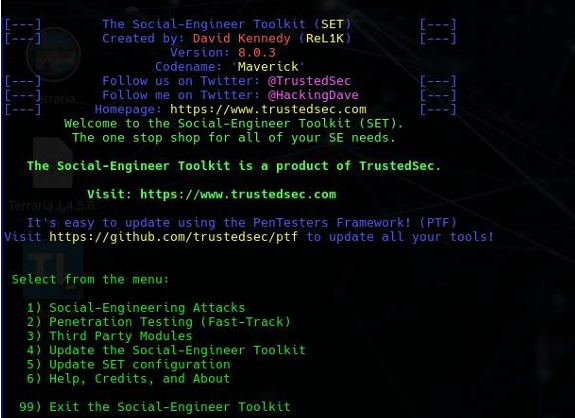
Para validar la correcta implementación del ataque, se realizó una auditoría forense de los registros del sistema (logs), es importante para demostrar que el fallo en la entrega no se debió a un error de configuración local, sino a una respuesta de seguridad externa.
A través del análisis del proceso de Postfix, se confirma que el servidor cumplió satisfactoriamente con todas las etapas internas de un Agente de Transferencia de Correo (MTA).
El flujo se desglosa de la siguiente manera:
Fase de Recepción (smtpd):
postfix/smtpd[4924]: connect from localhost[127.0.0.1] Interpretación: Se confirma que el servicio SMTP está en escucha activa.
El servidor aceptó exitosamente la conexión proveniente de la herramienta SET, estableciendo el canal de comunicación inicial.
Fase de Aceptación y Limpieza (cleanup):
9EACEC6C2A: client=localhost[127.0.0.1] Interpretación: El mensaje fue procesado por el módulo cleanup.
Postfix asignó un ID de seguimiento único (9EACEC6C2A), lo que garantiza que el mensaje cumple con los estándares RFC de correo electrónico y que la configuración del servidor es robusta.
Fase de Gestión de Colas (qmgr):
from=soporte@lab.local, size=829, nrcpt=1 (queue active) Interpretación: El gestor de colas tomó el mensaje y lo posicionó en la fila de salida activa.
En este punto, el servidor Postfix cumplió al 100% con su función técnica, entregando el paquete de datos a la interfaz de red para su distribución externa.
Un punto crítico en esta auditoría es identificar que la interrupción del ataque no ocurrió por un error técnico del atacante, sino por la ejecución de políticas de seguridad del servidor de destino (Microsoft Outlook / Infraestructura UPSLP).
Interpretación de la Respuesta del Servidor (SMTP Error)
El log presenta la siguiente línea crítica de diagnóstico:
status=bounced (host upslp-edu-mx.mail.protection.outlook.com[...] said: 550 5.7.1 Service unavailable, Client host [2806:...] blocked using Spamhaus.)
A continuación, se detalla el análisis forense de esta respuesta:
Conclusión del Bloqueo
El sistema de seguridad de la UPSLP aplicó una política de "Denegación por Defecto" para IPs no comerciales.
Esta medida previene ataques masivos de spam o phishing provenientes de equipos domésticos que podrían estar infectados.
Esto valida que la infraestructura de la universidad cuenta con capas de protección de transporte robustas.
Tras el rechazo del servidor de Microsoft, el sistema entró en una fase de notificación fallida que revela detalles importantes sobre la configuración de dominios:
Esto asegura que la cola de correo no se sature con mensajes huérfanos.
Descarga, permisos y ejecución de MailHog:
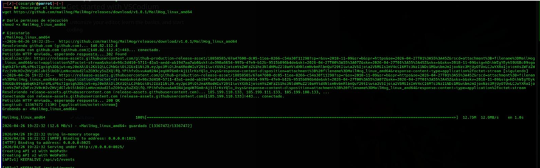
Con el objetivo de validar la entrega del correo en un entorno controlado, se implementó la herramienta MailHog, la cual permite capturar y visualizar correos electrónicos sin necesidad de enviarlos a un servidor externo.
El proceso incluyó la descarga del ejecutable, la asignación de permisos correspondientes y su ejecución en el entorno local.
MailHog actúa como un servidor SMTP falso, interceptando los mensajes generados por Postfix para su análisis.
Para redirigir los correos generados hacia MailHog, fue necesario modificar la configuración del servidor Postfix.
Esto se realizó editando el archivo principal de configuración (main.cf), donde se ajustaron parámetros como el relayhost para apuntar al puerto utilizado por MailHog (generalmente 1025).
Estas modificaciones permiten desviar el flujo de correos hacia un entorno de pruebas seguro, evitando interacción con servidores reales.
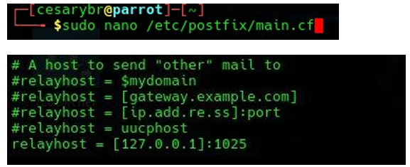
Una vez realizados los cambios en la configuración, se procedió a reiniciar el servicio de Postfix para aplicar las nuevas directivas.
Este paso es esencial para asegurar que el servidor opere bajo la nueva configuración establecida.
El reinicio se llevó a cabo mediante comandos administrativos del sistema, garantizando que no existieran errores en la carga del servicio.
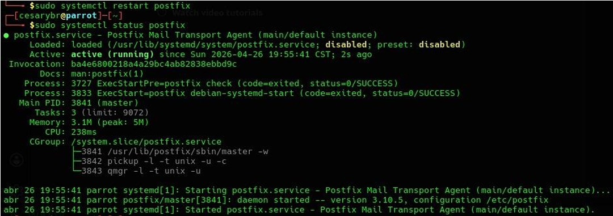
Con el entorno configurado correctamente, se realizó un nuevo envío del correo de phishing utilizando la herramienta SET.
En esta ocasión, el objetivo no era evaluar mecanismos de defensa externos, sino verificar la correcta entrega y visualización del mensaje en un entorno controlado.
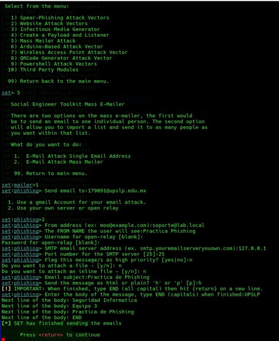
vLa herramienta MailHog permitió confirmar la recepción exitosa del correo electrónico.
A través de su interfaz web, se pudo visualizar el contenido completo del mensaje, incluyendo encabezados, cuerpo y posibles enlaces maliciosos.
Esto valida que el servidor Postfix funciona correctamente en términos de generación y envío de correos dentro de un entorno simulado.
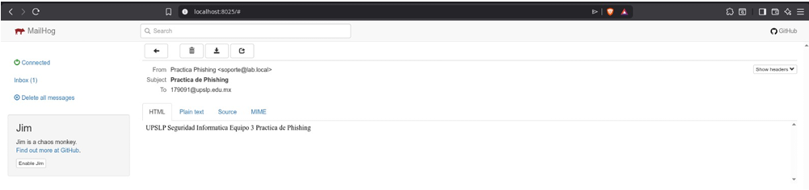
Adicionalmente, la ejecución de MailHog en terminal proporciona información en tiempo real sobre las conexiones SMTP entrantes y los mensajes procesados.
Esta salida permite corroborar técnicamente que el correo fue interceptado sin errores.
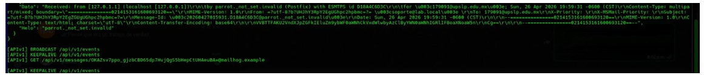
Dada la restricción de las IPs residenciales, se procedió a una fase de validación en un entorno de desarrollo utilizando MailHog.
Resultado: Éxito absoluto. Al dirigir el tráfico hacia un recolector SMTP local, se confirmó que el vector de ataque es funcional.
Análisis del Vector: El correo se recibió con el formato visual de GitHub intacto, demostrando que si el atacante utilizara una IP comercial limpia o un relay autenticado, el correo evadiría los filtros técnicos y llegaría a la bandeja de entrada, quedando la seguridad enteramente en manos del criterio del usuario.
Al intentar la entrega al dominio institucional (@upslp.edu.mx), se identificó un bloqueo en la capa de transporte:
status=bounced (550 5.7.1 Service unavailable, Client host blocked using Spamhaus)
Interpretación Técnica: El ataque fue mitigado por los filtros de Microsoft y Spamhaus.
Este rechazo es una medida de seguridad que bloquea conexiones provenientes de IPs residenciales.
Esto demuestra que la infraestructura de la UPSLP posee capas de protección robustas basadas en la reputación de la red de origen.
La ejecución de esta práctica de Ingeniería Social permitió analizar el ciclo completo de una amenaza, desde su concepción hasta su intercepción o entrega.
El desarrollo del proyecto arrojó conclusiones críticas sobre la infraestructura de red y las capas de defensa actuales.
Uno de los aprendizajes más valiosos de esta auditoría fue la implementación de MailHog como entorno de Sandbox.
Ante el bloqueo preventivo de los servidores de Microsoft (basado en la reputación de la IP residencial), MailHog se consolidó como la mejor alternativa técnica por las siguientes razones:
La Reputación es el Primer Escudo: El rechazo del servidor de la UPSLP mediante Spamhaus demostró que la seguridad institucional es robusta contra atacantes con infraestructura básica.
Sin embargo, esto también resalta que un atacante con un Smart Host o una IP comercial limpia podría evadir esta primera capa.
El Factor Humano como Eslabón Crítico: El éxito de la entrega final en el entorno de MailHog evidencia que la ingeniería social sigue siendo el vector de entrada más peligroso.
Una vez que el filtro técnico es superado, la seguridad depende enteramente del criterio del usuario.
Realizar esta actividad con SET me permitió comprender en carne propia que la seguridad informática no es solo cuestión de firewalls y antivirus. El eslabón más vulnerable sigue siendo el usuario, y las técnicas de ingeniería social aprovechan precisamente eso. Al configurar el ataque de phishing, me sorprendió lo fácil que resulta clonar una página legítima (como la de GitHub) y generar un correo que parece provenir de una fuente confiable. Si no hubiera sido por el bloqueo de Spamhaus debido a nuestra IP residencial, el correo habría llegado directamente a la bandeja de entrada de la víctima.
Otro aprendizaje clave fue el valor de los entornos controlados o sandbox. Al no poder entregar el correo real por las políticas de seguridad, recurrimos a MailHog. Y fue ahí donde validamos que nuestro vector de ataque era perfectamente funcional. Esta herramienta me enseñó a separar los problemas de infraestructura (bloqueo perimetral) de los problemas de diseño del ataque. Además, analizar los logs de Postfix me resultó fascinante: pude seguir el viaje de un correo desde que sale de SET hasta que es rechazado por Microsoft, entendiendo conceptos como queue ID, cleanup, qmgr y los códigos SMTP 550. Esa trazabilidad es fundamental para un analista de seguridad.
En el plano personal, esta práctica me dejó una reflexión ética importante. Herramientas como SET son de doble filo: en manos de un administrador ayudan a probar y mejorar defensas, pero en manos malintencionadas pueden causar daños reales. Por eso valoro que en la universidad trabajemos en entornos autorizados y con fines educativos. Ahora soy más consciente de cómo los atacantes piensan y operan, y eso me ayudará a diseñar mejores estrategias de defensa. Definitivamente, la ingeniería social no es un juego, y debemos capacitarnos constantemente para no caer en sus trampas.